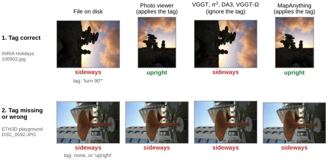

哪边是上？被旋转的照片正在悄悄损害多视图 3D 基础模型
Which Way Is Up? Rotated Photos Silently Hurt Multi-View 3D Foundation Models
一句话：这不是新方法，而是一份把「方向标签在数据链路里被吃掉」这件事钉死的测量报告——几个侧放照片就足以让最强的 3D 基础模型位姿变差，而流水线里没有任何环节会告诉你。
AUC@30
AUC@30
loaders
recall
作者、单位与技术谱系 · Research context
作者与单位
研究脉络
- DUSt3R → VGGT / π³ / Depth Anything 3 / MapAnything / VGGT-Ω方法上游（被测对象）关系：评测对象谱系：这些模型把「无需标定、无需逐场景优化」作为卖点，本篇正是检验这一卖点在真实采集条件下的边界。[本文 §2 Related Work]
- ETH3D 基准及其准备代码数据上游关系：污染来源：ETH3D 去畸变图像无 EXIF、原始文件把 34 张侧放标成正立；其基准准备代码另行扶正或跳过这些照片。[本文 §4.2]
- G3T 重力估计器方法上游（修复候选）关系：修复依赖：作者把 G3T 的重力头作为最安全的旋转检测器测试，发现它在 180° 倒置上几乎失效。[本文 §4.3 与参考文献 [14]]
- 本篇：方向鲁棒性测量本篇推进关系：把上述模型与基准放在同一个受控实验里，量化旋转的代价并逐项检验修复手段的覆盖范围。[本文 §1 贡献]
合作网络
- University of Guelph 署名关系Yukun Shi → Minglun Gong关系：共同署名与同一单位[arXiv 官方 HTML]
- G3T 技术依赖边本篇评测 → G3T（Gravity aligned coordinate frames）关系：技术依赖（直接使用其重力头作为修复器）[arXiv:2605.27372（本文参考文献 [14]）]
作者与单位取自论文首页；与 G3T 的关系是工具依赖而非合作，未发现其他公开合作边。所有「为什么没被发现」的解释均引自原文 §4.2，不是本文的推测。
方法本质拆解 · What actually changed
是不是微调？
没有任何训练。五个模型全部使用官方发布权重，修复器（check_orientation、deep-image-orientation-detection、G3T 重力头）也都是现成模型直接推理；作者只做前向评测与统计检验，因此结论不涉及训练配方，任何团队都能在自己的数据上复跑。
有没有额外约束？
对被测模型没有任何额外输入约束，这正是问题所在：旋转照片被整张放在白色方图上送进网络，模型无从知道「上」在哪。作者唯一施加的约束在评分端——把预测相机按已知旋转转回，使 AUC@30 比较的是同一物理配置，从而把「旋转本身」的效应与「构图变化」的效应分开。
推理/后端到底做了什么？
推理完全沿用各模型原生流程与官方加载器（后者会 resize/crop/stretch/pad），没有测试时优化或后处理。作者额外做的是评测侧的处理：用真值相机判定旋转量、按阈值统计 66 对相机、用按场景 bootstrap 给置信区间；表 2 还专门对比了「官方加载器喂入」与「先转正再喂入」两条路径。
方法本质是什么？
本质是把一个「输入契约破坏」问题从经验轶事变成可复现的量化结论：旋转改变了图像与相机之间的相对几何，而模型没有任何机制编码「上」，于是它把旋转当作真实的相机姿态变化去建模，误差同时污染被转照片自身与同组其他相机。它没有提出修复架构，而是证明现有每一层防线（标签、加载器、基准准备、置信度）都在漏。
输入一组照片（部分被旋转），模型在无任何方向先验下一次前向估计相机与点，测量显示少数侧放照片即可显著拉低 AUC@30，且置信度、加载器与基准代码都不会报警。

结论与问题Conclusion & Motivation
核心结论
这篇的核心结论是：多视图 3D 基础模型的输入契约里有一个未被声明的假设——「像素已经是正立的」，而这个假设在真实采集链路里经常不成立，且破坏后模型不会报警。作者把「旋转」定义为存储像素需要被转过来才能正立（侧放 90° 或倒置 180°），并在 DTU、ETH3D、Tanks and Temples 上用 AUC@30 测量。三张照片侧放（12 张中的 3 张）就足以让五个模型全部掉点：DA3 −0.36、MapAnything −0.18、π³ −0.06、VGGT −0.05、VGGT-Ω −0.03；ETH3D 自带的 34 张侧放照片造成 0.04–0.29 的损失，证明这不是合成扰动才有的事。更关键的是「静默」：只有 MapAnything 的加载器读 EXIF 标签，其余四个拿到的是侧放像素，而模型置信度对旋转/正立照片的区分度只有 70%（DA3）与 62%（MapAnything），接近抛硬币。
动机与问题
3D 基础模型被设计成「无需标定、无需逐场景优化」的随手拍工具：用户绕物体走一圈、拿着手机穿过房间，就可以前馈出位姿与稠密几何。但用户会转手机，相机也会把竖拍以横向像素 + 方向标签的形式存盘。标签只要被忽略、丢失或写错，模型收到的就是旋转过的图。作者指出三种情况都真实存在：多数官方加载器忽略标签；ETH3D 基准使用的去畸变图像没有 EXIF；相机原始文件把全部 34 张侧放照片标成「正立」。于是问题变成两个可测量的问题：旋转照片究竟让位姿精度掉多少，以及为什么这条流水线（查看器、加载器、基准准备代码、模型置信度）没有任何环节把它暴露出来。
方法Method
方法总览
这是一份控制实验，不提出新模型。五个被测对象用官方权重：VGGT(1B)、π³、DA3-Large-1.1、MapAnything、VGGT-Ω（416 像素评测检查点）。数据为 2DGS 使用的 15 个 DTU 扫描、6 个 Tanks and Temples 场景，以及 ETH3D 全部 13 个高分辨率训练场景，每组 12 张按采集顺序均匀分布的照片；ETH3D 中有 34 张照片（涉及 delivery_area、playground、relief、relief_2 四场景）本身就以逆时针 90° 存储，作者从这些场景各抽三组。设置三种对照：三张随机照片转 90°（顺时针或逆时针，两次随机取平均）；同样三张先裁成竖构图再转（模拟「竖拍存成横图」）；ETH3D 自带的侧放照片原样使用。所有照片整张放在白色方图上输入，保证旋转版与正立版只差一个旋转；评分前把预测相机按已知旋转转回，因此掉的分就是旋转本身造成的。
关键技术细节
三个方法学细节让结论站得住。第一，「旋转」由真值相机判定而不是靠人眼：场景的上方向指向正立照片的顶部、指向侧放照片的某一侧，因此可以精确知道哪张被转了多少。第二，只在同一组照片的「正立版 vs 旋转版」之间比较，连 portrait-first 的裁切都保持一致，排除构图/分辨率变化的干扰；每种损失都用按场景 bootstrap 的 95% 置信区间检验，作者称所有损失都显著大于零。第三，把「损伤扩散」单独拆出来看：在 ETH3D 自带侧放照片的组里，含侧放照片的相机对 AUC 为 0.02，转正后 0.75，而纯正立照片之间的相机对几乎不变（0.73 vs 0.71）；但在三张侧放照片的设置下，DA3 的纯正立对也从 0.87 掉到 0.70，说明误差会传染到同组其他相机。

实验Experiments
实验设置
评测集为 15 个 DTU 扫描 + 6 个 T&T 场景（照片全正立，作为基准行）+ ETH3D 13 个场景（其中 4 个含自带侧放照片）。指标是 VGGT 定义的 AUC@30：模型一次估计全部 12 张照片的相机，两两比较 66 对，只有旋转角误差与平移方向误差都低于阈值才算对，阈值 0°–30° 积分。对照组是同一批照片的正立版本；额外两组对照是「官方加载器直接喂」（表 2）与「三种修复器先处理再喂」（表 3）。统计上用按场景 bootstrap 的 95% 置信区间判断损失是否显著。需要强调的边界：只评相机位姿，不评深度、点云或下游建图；多数旋转是人工施加的。
实验数字与比较
正立 AUC@30 基线：VGGT 0.93、π³ 0.94、DA3 0.88、MapAnything 0.77、VGGT-Ω 0.96。三张侧放（全数据集平均损失）：DA3 −0.36、MapAnything −0.18、π³ −0.06、VGGT −0.05、VGGT-Ω −0.03；T&T 上 DA3 单数据集就掉 0.53。ETH3D 自带侧放照片：DA3 −0.29、MapAnything −0.29、π³ −0.09、VGGT −0.07、VGGT-Ω −0.04。portrait-first：−0.04 至 −0.29。走官方加载器（表 2，portrait-first / ETH3D 自带）：DA3 0.48→0.75、0.39→0.72；MapAnything 0.51→0.61、0.33→0.70；π³ 反而从 0.80 掉到 0.66、0.81 掉到 0.56（其加载器把每张图拉成首张的形状）；VGGT 0.87→0.89 但 ETH3D 0.74→0.69；VGGT-Ω 0.88→0.89、0.90→0.92。修复器（表 3）：check_orientation 保留 97% 正立、转正 98% 的 90° 与 96% 的 180°；deep-image-orientation-detection 95%/96%/95%；G3T 重力头 100%/97%/15%。
消融/失败边界
这份工作的「消融」就是修法的逐项反例。读标签：只在标签存在且正确时有效——ETH3D 的去畸变图没有 EXIF、相机原始文件把侧放标成正立，两种情况读标签都救不了；即便标签正确，四个模型的官方加载器会裁切或拉伸成统一形状，DA3/MapAnything 受益、π³ 反而变差、VGGT 在 ETH3D 上更差。方向分类器：能把 95%–100% 的旋转照片转正，但会把 3%–5% 的正立照片转歪，在没有旋转照片的组上因此让五个模型的位姿精度掉 0.03–0.06，属于「引入新错误换掉旧错误」。重力估计器（G3T）：最安全——407 张正立照片一张没动，ETH3D 自带侧放全部转正，人工侧放恢复 97%，但只转正 15% 的 180° 倒置照片，所以倒置必须另做检查。失败边界因此明确：没有一种离线修法能覆盖「标签缺失 + 倒置 + 加载器裁切」的组合。
局限与迁移Limitations & Transfer
局限与待核验
作者明确承认：只评相机位姿、每组只有 12 张照片、多数旋转是人工合成，结论范围有限。我们的待核验项：第一，未报告深度/点云/建图质量在旋转下的退化，对下游 SLAM 而言位姿掉 0.36 AUC 是否等价于点云崩坏还需要自己测；第二，三张侧放是「少量」的代表，若侧放比例升到 50% 以上趋势如何、是否有阈值效应，文中未给曲线；第三，portrait-first 与真实手机竖拍之间的差异（裁切比例、镜头畸变）没有专门讨论；第四，没有开源评测脚本，复现需自行实现 AUC@30 与按场景 bootstrap；第五，结论基于 2026 年 10 月的五个模型版本，后续版本是否修了加载器需重新核对。
与你研究路线的关系
这篇虽然不提出方法，但对我们的工程链路是直接可用的检查项。其一，输入端要做显式方向契约：我们的多传感器采集里有手机/运动相机素材，进入 3D 基础模型前应先统一到「像素正立」，并把「标签是否存在、是否可信」当作数据质量字段记录下来，而不是依赖加载器默认行为。其二，评测要保留旋转样本并单独报数：如果我们的基准把侧放照片预先扶正或跳过，就会系统性高估模型在真实随手拍数据上的表现，这与我们强调「可复现证据」的原则冲突。其三，修法选择有明确优先级：有可信标签就用标签；没有就用重力估计器并单独查 180°；转正之后要 padding 而不是裁切/拉伸，否则混合构图会引入新的精度损失。下一步最小实验：在我们自己的数据管线上做一次 A/B——同一批含竖拍素材的序列，分别「忽略标签」与「应用标签 + padding」，比较前端位姿 AUC 与后端重投影残差，确认这条检查能带来多少实际收益。